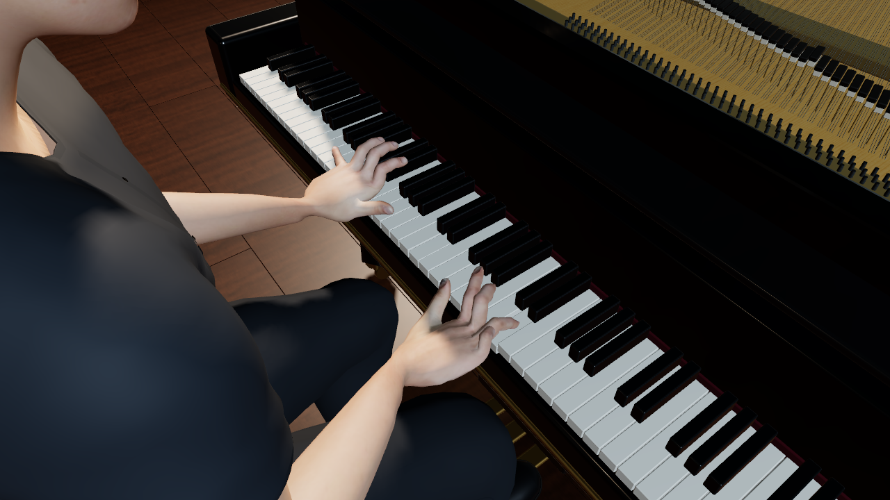
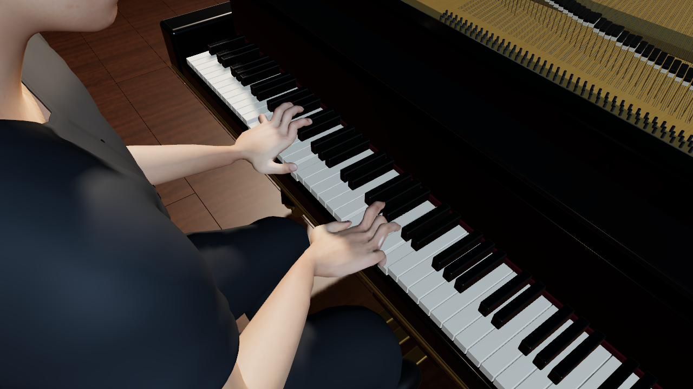
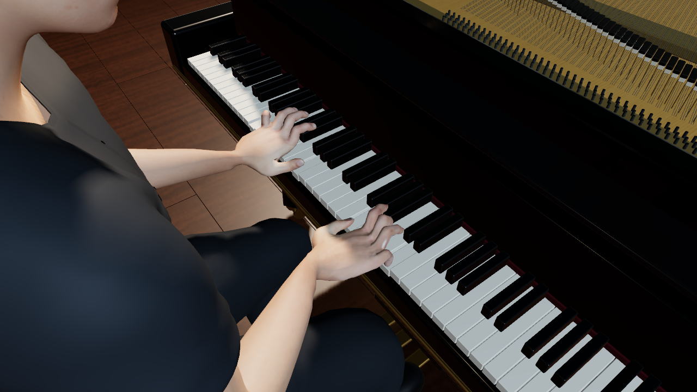
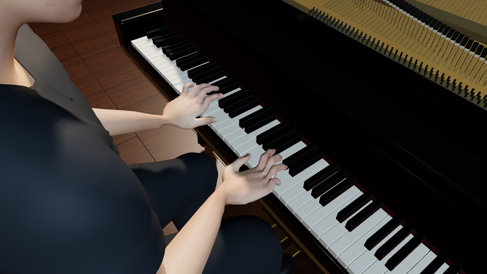
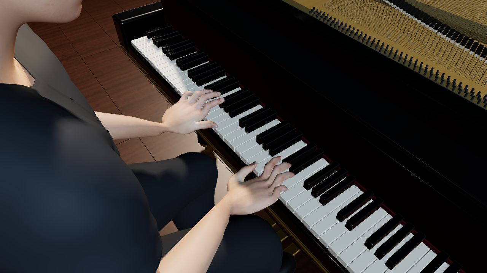
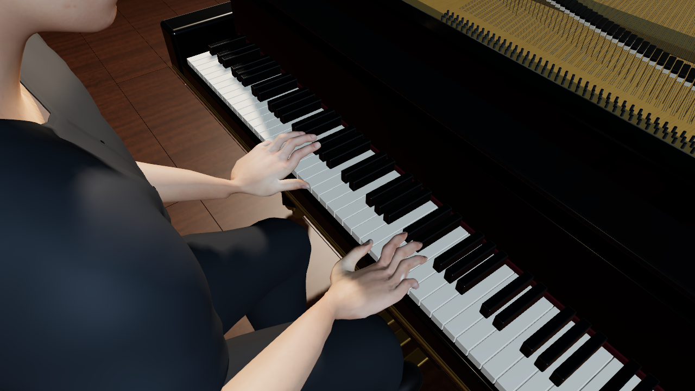

Supported wrist/nonthumb correction plus three fixed thumb intervals. See README.md and delta.json for measured residual contacts. Original comparison retains75 increased core rows over3mm and148 pair increases; these images are not a claim that every approach collision is resolved.





